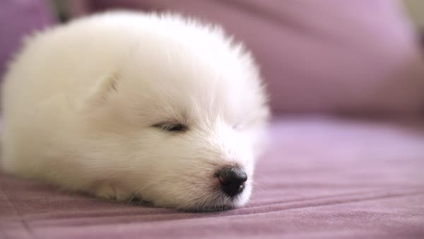

Welcome to Samoy's world!
Fluff pack
>
Looking to adopt a Samoy puppy/dog? Puppies and dogs are available! Looking for active owners who are willing to devote their time into raising them with unconditional love. They are also trained ready to enter competitions so they are defiantly in need of a playful and active owner who will take them on lots of walk, treat them well and even once in a while spoil them with treats for their efforts. Our center doesn't allow just anyone to take them home and we will carefully screen and select owners who have proper knowledge about animals and can show us they are the right fit for these pooches! Contact us now if you are interested in owning a Samoy today!